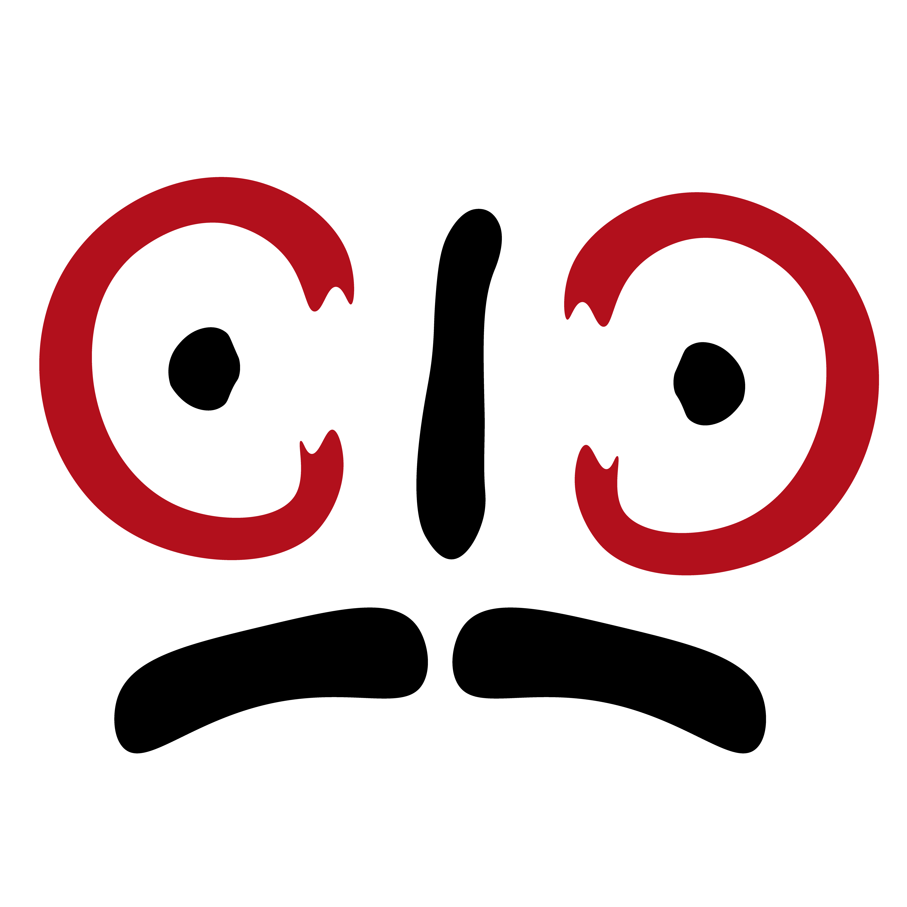

Over Mij
Wie ik ben
Hallo, ik ben Cihan Copur. Ik studeer Mediavormgeven aan SintLucas. Ik ontwerp graag logo’s en visuele identiteiten, met veel aandacht voor kleur en typografie. Daarnaast maak ik ontwerpen voor links politiek activisme, waarbij ik politieke en maatschappelijke boodschappen zichtbaar maak.
Voor mij begint elk ontwerp met een idee en een verhaal. Ik vertaal dat verhaal naar een duidelijk en herkenbaar beeld. Mijn ontwerpen moeten er goed uitzien, een boodschap overbrengen en passen bij het doel.
SintLucas — Mediavormgeven.

Gereedschap & Vaardigheden
Contact